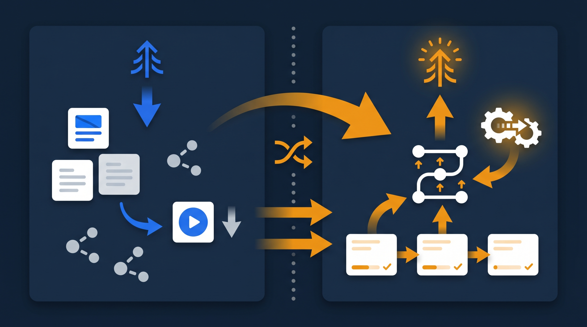
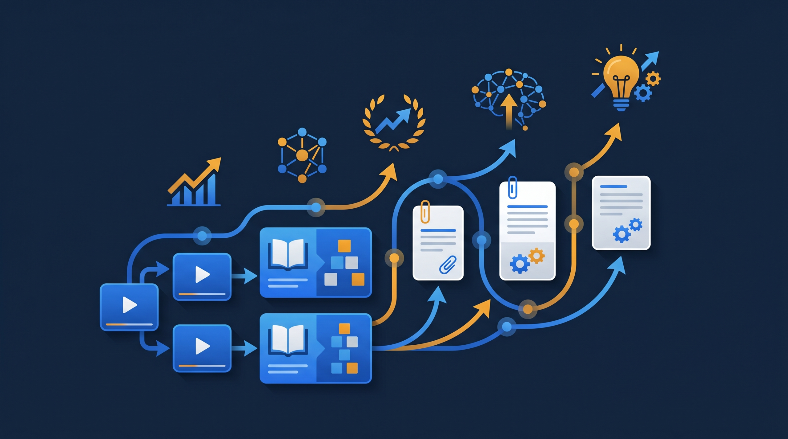
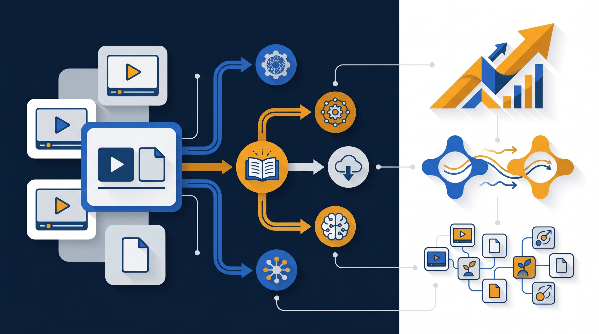

「毎年、同じ新人研修を同じ講師がやっている」「拠点が増えるたびに、研修日程の調整に追われる」——こうした悩みは、研修のやり方そのものを見直す合図かもしれません。この記事では、これまで主流だった集合研修と、近年広がる動画研修の違いを、コスト・効果・運用負担の3つの面で整理し、一度作れば繰り返し使える「資産としての研修」の作り方を、現場目線で解説します。

集合研修と動画研修とは？まず言葉を整理する
集合研修は、受講者を1か所に集めて、講師がその場で教える研修のことです。会議室やセミナー会場に人が集まり、決まった日時に同じ内容を学びます。長く企業研修の中心だった方法で、新人研修や管理職研修など、多くの場面で使われてきました。
一方の動画研修は、研修内容をあらかじめ動画に収録しておき、受講者が自分のタイミングで視聴して学ぶ方法です。eラーニングと呼ばれる学び方の一つで、パソコンやスマートフォンから、いつでも何度でも見返せます。
この2つは「対立するもの」と捉えられがちですが、実際には得意な領域が違うんですよね。集合研修は、その場の対話や体験から学ぶことに強く、動画研修は、知識のインプットや手順の習得を何度でも繰り返せることに強い。だからこそ、どちらが優れているかではなく、何をどちらに任せるかを考えるのが、現実的な進め方になります。
厚生労働省の能力開発基本調査でも、OFF-JT（業務を離れて行う研修）は多くの企業が実施している主要な育成手段として位置づけられています。集合研修も動画研修も、このOFF-JTに含まれる学び方だと考えると、整理しやすくなります。
コストの違い：その場で消えるか、残るか
まず気になるのは、やはりコストの違いではないでしょうか。集合研修と動画研修では、お金のかかり方の「構造」がまったく異なります。
集合研修は、開催するたびに費用が発生します。会場費、講師への謝礼、受講者の交通費、そして受講者が業務を離れる時間分の人件費。これらは、研修を1回やるたびに、毎回かかってくる費用です。新人が入るたびに同じ研修を開けば、その回数だけコストが積み上がっていきます。
これに対して動画研修は、最初に動画を作る費用はかかりますが、一度作ってしまえば、その後は何度視聴しても追加の制作費はほとんどかかりません。100人が見ても、来年の新人が見ても、教材そのものは使い回せるわけです。
- 集合研修：開催のたびに会場費・講師費・交通費・人件費が発生する（変動費型）
- 動画研修：最初の制作費はかかるが、視聴回数が増えても追加費用はほぼ増えない（固定費型）
- 受講人数が多い・研修の頻度が高いほど、動画研修のほうが1人あたりコストは下がる傾向がある
たとえば、ある小売チェーンで、毎月の新人接客研修を本部の研修担当者が各店舗を回って実施していたとします。移動時間も交通費もかさみますし、担当者がその月に何回も同じ話をすることになります。この基礎部分を動画にすれば、担当者は移動から解放され、各店舗は新人が入ったその日にすぐ視聴を始められます。「毎回かかっていた費用」が「最初の一度だけ」に変わる——これがコスト面での一番大きな違いです。
ただし、注意したい点もあります。動画は作って終わりではなく、内容が古くなれば更新が必要です。法改正や商品の入れ替わりが多い分野では、更新の手間もコストに含めて考えておくと安心です。
効果の違い：何を学ぶかで向き不向きがある
「動画にすると研修の効果が下がるのでは」と心配される方は多いです。けれど、これは学ぶ内容によって答えが変わります。
知識のインプットや、決まった手順の習得については、むしろ動画のほうが向いていることが多いんです。理由はシンプルで、何度でも見返せるから。集合研修では、聞き逃したり理解が追いつかなかったりしても、その場では巻き戻せません。動画なら、分からなかった部分を一時停止して、もう一度見られます。自分のペースで学べるぶん、理解の取りこぼしが減るわけです。
一方で、動画では再現しにくい学びもあります。受講者同士の議論、ロールプレイ、講師がその場で受講者の反応を見ながら個別にフィードバックする場面、チームとしての一体感づくり。こうした「双方向のやり取り」や「体験を通じた学び」は、集合研修に大きな強みがあります。

ここで効いてくるのが、両方を組み合わせる発想です。たとえば営業研修なら、商品知識や基本トークの型は事前に動画で学んでおき、集合研修の当日はロールプレイと相互フィードバックに時間を使う。事前に全員が同じ知識を入れてくるので、当日いきなり基礎から説明する必要がなくなり、限られた集合の時間を、人と人とのやり取りが必要な部分に集中できます。このように、動画で土台を作って集合研修で応用する形は、それぞれの強みを活かせる進め方だと言えます。
実際の現場を想像してみましょう。これまで丸一日かけていた研修のうち、午前中はずっと講師が一方的に説明する座学だったとします。この座学部分を動画に移せば、受講者は事前に各自で見てきますよね。すると当日は、いきなり実践演習から始められる。同じ一日でも、学びの密度がまったく変わってくるというわけです。
運用負担の違い：日程調整から解放されるか
見落とされがちですが、研修の運用にかかる手間の違いも、見過ごせないポイントです。
集合研修は、開催のたびに段取りが必要になります。受講者全員の都合を合わせる日程調整、会場の予約、講師の確保、資料の準備、当日の出欠管理。特に、拠点が複数あったり、シフト制で全員が同じ日に集まれなかったりする職場では、この調整だけで担当者がかなりの時間を取られます。「全員がそろう日がない」という理由で、研修自体が後回しになってしまうことも珍しくありません。
動画研修は、この日程調整の負担を大きく減らせます。受講者は、自分の空いた時間に視聴すればよいので、全員の都合を一つの日に合わせる必要がありません。シフト勤務の現場でも、夜勤明けの人でも、それぞれのタイミングで学べます。
- 全員の都合を合わせる日程調整が不要になる
- シフト制・多拠点でも、各自のタイミングで受講できる
- 新人が入った当日から、待たずに研修を始められる
- 受講管理システムを使えば、誰がどこまで進んだかを自動で把握できる
ところで、動画を配るだけでは「誰が見たか分からない」という新しい悩みが生まれます。ここで役立つのが、学習管理システム（LMS）です。動画と確認テストをLMSに置いておくと、受講状況や理解度が自動で記録され、まだ見ていない人への案内も整理しやすくなります。集合研修の出欠表を手作業で管理していた頃と比べると、運用の手間そのものが軽くなるわけです。
ある介護施設では、シフトがバラバラで全員を集めた研修がほとんど開けず、教育が新人任せになっていたといいます。基本ケアの手順を動画化してLMSに載せたところ、各自が空き時間に視聴できるようになり、誰がどこまで学んだかも一覧で見えるようになった——こうした変化は、運用負担の軽減が現場の教育を前に進めた例だと言えます。
研修コンテンツを「資産」に変えるという発想
ここまでコスト・効果・運用の違いを見てきましたが、動画研修の本当の価値は、もう一段深いところにあります。それが、研修コンテンツの「資産化」です。
集合研修は、その日その場で終わってしまいます。講師が話した内容も、受講者の頭に残った分を除けば、研修が終わった瞬間に消えていきます。来年も同じ研修をするなら、また一から開催しなければなりません。つまり、研修は「やっては消える」消耗品のようなものでした。
ところが動画研修では、作った教材が手元に残ります。今年の新人研修で作った動画は、来年も、再来年も使えます。さらに、説明が分かりにくかった部分を直したり、新しいテーマを追加したりすれば、教材はどんどん良くなり、増えていきます。気づけば、社内に「研修ライブラリ」とでも呼べるものが積み上がっていくわけです。
これは、会社にとって立派な資産です。新人が入るたびに、毎回同じ品質の教育をすぐに提供できる。ベテランの知識やコツも、動画にしておけば、その人が異動や退職をしても社内に残ります。研修を「その都度の出費」から「積み上がる財産」へと位置づけ直す——この発想の転換が、動画研修を導入する一番のメリットだと言えるのではないでしょうか。

J-Net21などの中小企業向け情報でも、人材の育成と定着は繰り返し経営課題として取り上げられています。人手も時間も限られる中小企業ほど、一度作った研修を繰り返し使える仕組みは、効いてくるはずです。なお、こうした研修の動画化やeラーニングの整備には、人材開発支援助成金のように、訓練にかかった経費や賃金の一部を国が助成する制度を活用できる場合があります。
自社ではどう使い分ければいいのか
最後に、自社で集合研修と動画研修をどう使い分けるか、判断の目安を整理しておきます。一律にこうすべきという正解はありませんが、考え方の軸はあります。
まず、繰り返し発生し、内容が大きく変わらない研修は、動画化に向いています。新人向けの基礎知識、安全衛生のルール、商品やサービスの基本説明など、毎回ほぼ同じ話をするものは、一度作れば長く使えます。
次に、その場の対話や体験が学びの中心になる研修は、集合研修に残すのがよいでしょう。ロールプレイ中心の接客・営業研修、ケーススタディを議論する管理職研修、チームビルディングを目的とした研修などです。
そして多くの研修は、この2つを組み合わせるのが現実的です。事前に動画で知識を入れ、集合研修では演習や議論に集中する。いわゆる反転学習と呼ばれる形ですが、限られた集合の時間を最も価値のある部分に使えるため、効果を高めやすい傾向があります。
迷ったときは、「この内容は、毎回同じことを話しているか？」と自分に問いかけてみてください。答えがイエスなら、その部分は動画にする価値が高い、ということになります。逆に、毎回その場の状況に応じて変わる内容や、受講者の反応を見ながら進める必要がある内容は、集合研修に残すのが向いています。
もう一つの目安は、対象となる人数と頻度です。受講する人が多く、何度も繰り返す研修ほど、動画化による効果が大きくなります。年に一度しか開かず、参加者も数名という研修なら、わざわざ動画を作るより集合研修のほうが手軽なこともあります。動画化は万能ではなく、向く場面で使ってこそ効いてくる、という点は押さえておきたいところです。自社の研修を一覧にして、人数・頻度・内容の3つで見ていくと、どこから動画化すべきかが見えてきます。
まとめ：研修を消耗品から財産へ
集合研修と動画研修は、どちらが優れているという話ではなく、得意な領域が違う、というのが結論です。集合研修は対話と体験に強く、動画研修は知識習得の繰り返しとコスト・運用面に強い。それぞれの強みを理解して、何をどちらに任せるかを設計することが大切です。
そして、動画研修の最大の価値は、研修を「その都度消えるもの」から「積み上がる資産」へと変えられることにあります。一度作った教材が社内に残り、繰り返し使われ、磨かれていく。この仕組みができると、教育はぐっと安定し、人が入れ替わっても品質を保ちやすくなります。
まずは、毎回同じ説明を繰り返している研修を1つ選び、その部分だけ動画にしてみる。そこから始めれば、自社にとっての集合研修と動画研修の最適な配分が、少しずつ見えてくるはずです。研修を「作って終わり」にせず、組織の財産として育てていく視点で、自社に合った進め方を検討してみてください。
よくある質問
どちらか一方に統一する必要はありません。基礎知識や繰り返し説明する内容は動画研修に任せ、議論やロールプレイ、相互フィードバックが必要な内容は集合研修で行う、という役割分担が現実的です。両方を組み合わせる進め方を検討してみてください。
内容によります。知識のインプットや手順の習得は、何度でも見返せる動画のほうが定着しやすい傾向があります。一方で、その場の対話や体験から学ぶ部分は集合研修に強みがあります。動画で土台を作り、集合研修で応用する形にすると、効果を保ちやすくなります。
高度な編集スキルは必須ではありません。スマートフォンと簡単な編集で、まず1本作るところから始められます。最初から完璧な映像を目指すより、受講者が理解できるかを基準に、使いながら改善していくほうが続けやすいです。
受講者同士の議論、ロールプレイ、講師がその場で個別にフィードバックする場面、チームの一体感づくりなどは、集合研修に強みがあります。これらは動画では再現しにくいため、集合研修の時間を、こうした双方向のやり取りに集中させる使い方が効果的です。
一度作った研修を動画やテスト教材として残し、その後の研修で繰り返し使える状態にすることを指します。集合研修はその場で消えてしまいますが、動画は作るほど社内に教材が蓄積され、新人が入るたびに同じ品質で教育できる「組織の財産」になっていきます。
動画を配るだけでは、誰がどこまで見たかが分かりません。学習管理システム（LMS）に動画と確認テストを置くと、受講状況や理解度が記録され、未受講者への案内も整理しやすくなります。人材開発支援助成金など、研修の実施を証明する書類が求められる場面でも記録が役立ちます。